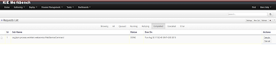
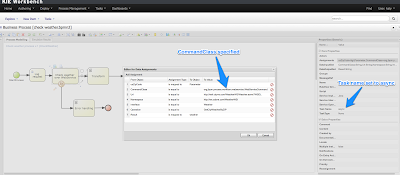
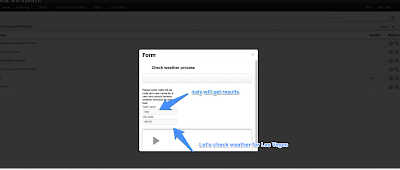

Make your work asynchronous
Asynchronous execution as part of a business process is common requirement. jBPM has had support for it via custom implementation of WorkItemHandler. In general it was as simple as providing async handler (is it as simple as it sounds?) that delegates the actual work to some worker e.g. a separate thread that proceeds with the execution.
Before we dig into details on jBPM v6 support for asynchronous execution let’s look at what are the common requirements for such execution:
- first and foremost it allows asynchronous execution of given piece of business logic
- it allows to retry in case of resources are temporarily unavailable e.g. external system interaction
- it allows to handle errors in case all retries has been attempted
- it provides cancelation option
- it provides history log of execution
When confronting these requirements with the “simple async handler” we can directly notice that all of these would need to be implemented all over again by different systems. So that is not so appealing, isn’t?
jBPM executor to the rescue
Since version 6, jBPM introduces new component called jbpm executor which provides quite advanced features for asynchronous execution. It delivers generic environment for background execution of commands. Commands are nothing more than business logic encapsulated with simple interface. It does not have any process runtime related information, that means no need to complete work items, or anything of that sort. It purely focuses on the business logic to be executed. It receives data via CommandContext and returns results of the execution with ExecutionResults. The most important rule for both input and output data is – it must be serializable.
Executor covers all requirements listed above and provides user interface as part of jbpm console and kie workbench (kie-wb) applications.
 |
| Illustrates Jobs panel in kie-wb application |
Above screenshot illustrates history view of executor’s job queue. As can be seen on it there are several options available:
- view details of the job
- cancel given job
- create new job
With that quite few things can already be achieved. But what about executing logic as part of a process instance – via work item handler?
Async work item handler
jBPM (again since version 6) provides an out of the box async work item handler that is backed by the jbpm executor. So by default all features that executor delivers will be available for background execution within process instance. AsyncWorkItemHandler can be configured in two ways:
- as generic handler that expects to get the command name as part of work item parameters
- as specific handler for given type of work item – for example web service
Option number 1 is by default configured for jbpm console and kie-wb web applications and is registered under async name in every ksession that is bootstrapped within the applications. So whenever there is a need to execute some logic asynchronously following needs to be done at modeling time (using jbpm web designer):
- specify async as TaskName property
- create data input called CommandClass
- assign fully qualified class name for the CommandClass data input
Next follow regular way to complete process modeling. Note that all data inputs will be transferred to executor so they must be serializable.
 |
| Illustrates assignments for an async node (web service execution) |
Second option allows to register different instances of AsyncWorkItemHandler for different work items. Since it’s registered for dedicated work item most likely the command will be dedicated to that work item as well. If so CommandClass can be specified on registration time instead of requiring it to be set as work item parameters. To register such handlers for jbpm console or kie-wb additional class is required to inform what shall be registered. A CDI bean that implements WorkItemHandlerProducer interface needs to be provided and placed on the application classpath so CDI container will be able to find it. Then at modeling time TaskName property needs to be aligned with those used at registration time.
Ready to give it a try?
To see this working it’s enough to give a try to the latest kie-wb or jbpm console build (either master or CR2). As soon as application is deployed, go to Authoring perspective and you’ll find an async-examples project in jbpm-playground repository. It comes with three samples that illustrates asynchronous execution from within process instance:
- async executor
- async data executor
- check weather
Async executor is the simplest execution process that allows execute commands asynchronously. When starting a process instance it will ask for fully qualified class name of the command, for demo purpose use org.jbpm.executor.commands.PrintOutCommand which is similar to the SystemOutWorkItemHandler that simple prints out to logs the content of the CommandContext. You can leave it empty or provide invalid command class name to see the error handling mechanism (using boundary error event).
Async data executor is preatty much same as Async executor but it does operate on custom data (included in the project – User and UserCommand). On start process form use org.jbpm.examples.cmd.UserCommand to invoke custom command included in the project.
Check weather is asynchronous execution of a web service call. It checks weather for any U.S. zip code and provides results as a human task. So on start form specify who should receive user task with results and what is the zip code of the city you would like to get weather forecast for.
 |
| Start Check weather process with async web service execution |
And that’s it, asynchronous execution is now available out of the box in jBPM v6.
Have fun and as usual keep the comments coming so we can add more useful features!

{kind=link}
{kind=link}
{kind=link}